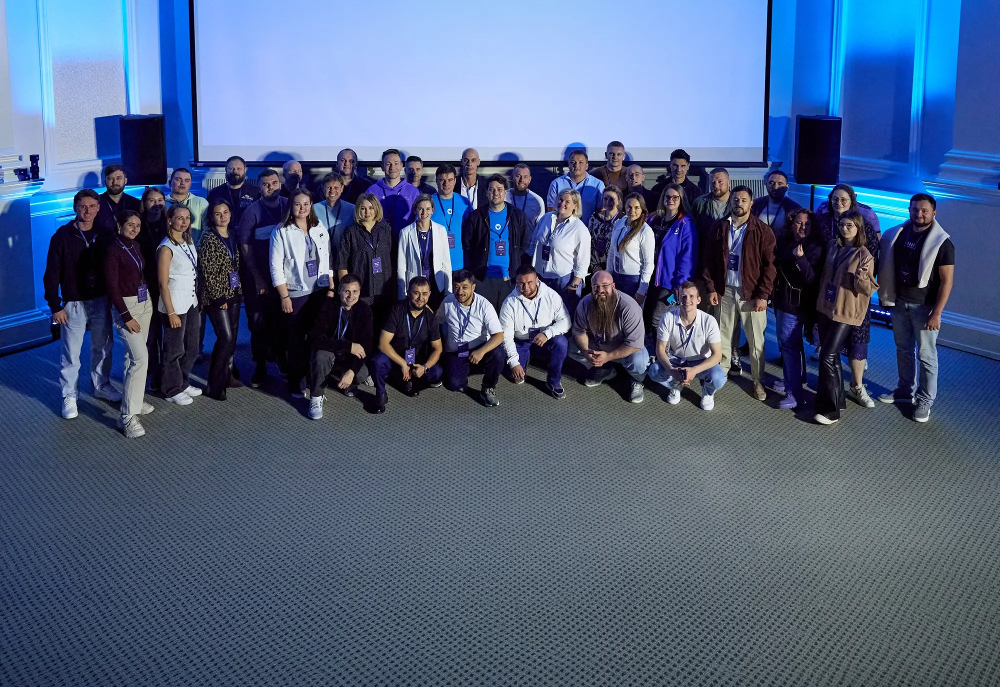
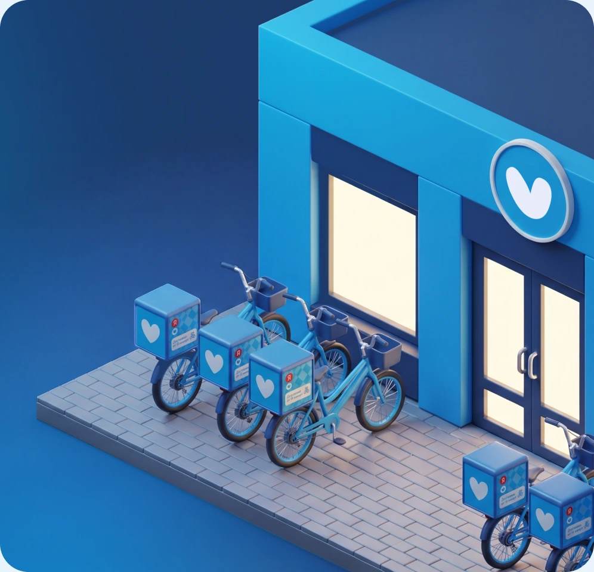
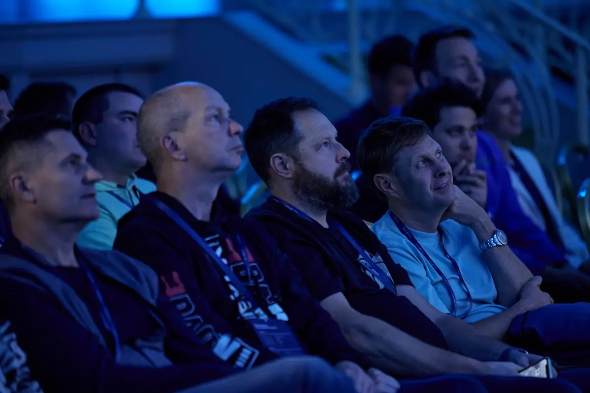
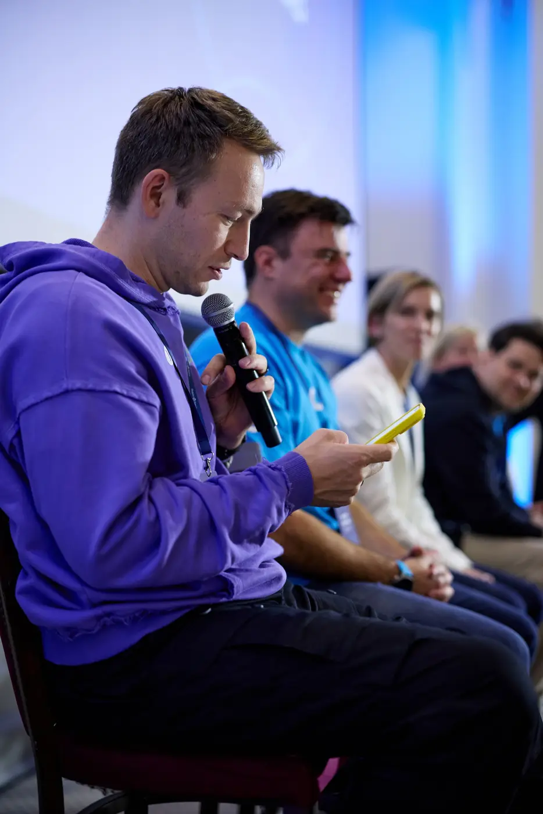
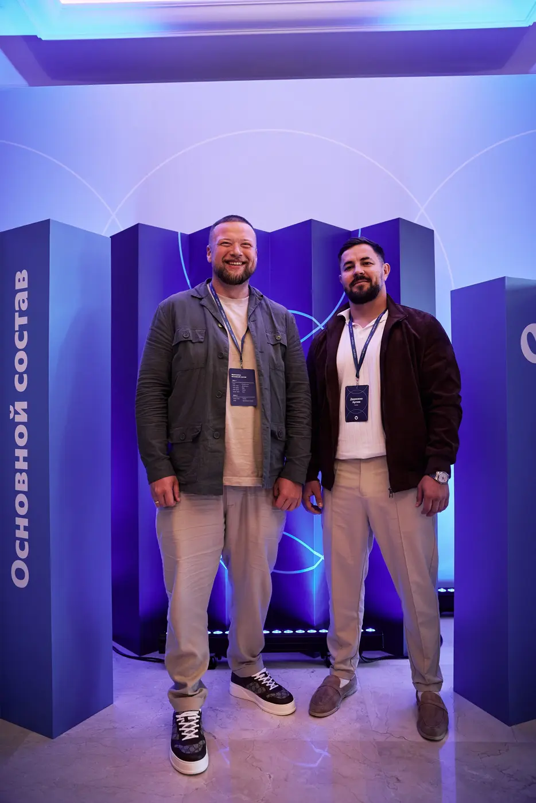
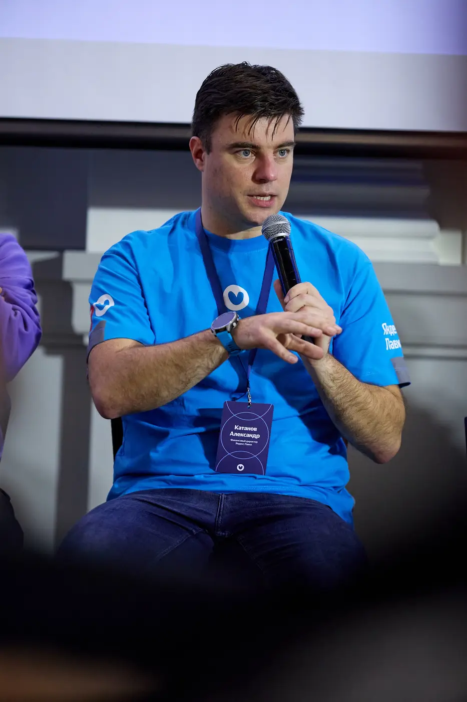

Telegram
Telegramгородов, где работает сервис
Бизнес-модель, технологии и сильный бренд уже работают — не нужно строить с нуля
Дизайн-система лендингов · v2 · сентябрь 2026
Семнадцать блоков LB00–LB16 с паспортом свойств, схемой и превью на телефоне — язык главного лендинга франшизы и страницы мероприятий. Настройте блоки, отметьте нужные, скопируйте HTML страницы.
kit.css и kit.js — или готовый template.html. Ассеты: шрифты из site/fonts, логотипы из site/assets/figma.Только синяя гамма брендбука. Оранжевый — единственный тёплый акцент, и только для статусов («набор открыт»). Новых цветов не добавляем.
#1B3A6A · --navy#00ADFF · --blue#AAD9FC · --sky#EAF3FC · --card#F2F7FC · --light#3E88C5 · --mid#5A749B · --dim#A7BEE0 · --dim-dark#152E56 · --navy-deep#FF6D2F · --liveYS Geo на всё, кроме юридического текста (YS Text Cond Light). Заголовки — Black, кернинг −1%, интерлиньяж 90%: «коротко и громко». Точек в заголовках нет.
Один контейнер на всё, секции по 128px, карточки с крупным скруглением. Тёмные и светлые секции чередуются.
Голубая — только главное действие, одна на экран. Вторичное — navy, контур или текст-ссылка со стрелкой. Hover: подъём на 2px.
Чипсы-пилюли для категорий, плашки-годы для мероприятий, круглые стрелки для каруселей, иконки на плашках — по брендбуку: аутлайн тёмно-синим.
 0–7%
0–7%
Подпись капсом над полем, поле 56px на светлой подложке, фокус — голубая обводка и кольцо. Согласие — круглый чекбокс.
Тёмная секция = navy + два-три размытых эллипса #00ADFF, повёрнутых на −32.9°. В секциях они дрейфуют и реагируют на скорость скролла; в карточках — статичны и тянутся за курсором.
Мягко и быстро: всё появляется снизу, ничего не пружинит. Один изинг на весь сайт, отдельные — для барабанов и слайдов. При prefers-reduced-motion всё гаснет.
--delay: .08s на соседях--ease: cubic-bezier(.22,.61,.36,1)--ease-slide: cubic-bezier(.5,0,.2,1)--ease-city: cubic-bezier(.19,1,.22,1) · --ease-drumФиксирована, прозрачная на хиро, стеклянная после 90px скролла. Лого-локап с бейджем, Telegram, одна CTA-кнопка. На телефоне — знак, CTA после первого экрана, бургер и полноэкранное меню.
Первый экран: одна мысль до пяти слов, лид до двух строк, одна голубая кнопка. Слова появляются по очереди.
Франшиза быстрой доставки продуктов с технологиями,
снабжением и поддержкой Яндекса
Москва, 26–27 сентября 2025

Передаём действующий бизнес в Казани, Челябинске и Тюмени — с командой, оборудованием и клиентами

Анонс события или статус набора на стыке хиро и контента. Вся полоса — ссылка; кнопка справа на градиенте. Светлая — под тёмным хиро, тёмная — между светлыми секциями.
Два-три числа в карточках или до четырёх в панели — не больше. Счётчик стартует, когда цифра в кадре. Подпись — что это, пояснение — почему важно.
Бизнес-модель, технологии и сильный бренд уже работают — не нужно строить с нуля
Партнёры готовятся к запуску, а мы сопровождаем на каждом этапе
Передаём в управление готовый бизнес или запускаем с нуля
Объяснить, как что-то устроено: заголовок, абзац, кнопка слева и кадр справа. Два-три слайда — карусель со стрелками, один — статичная плашка (.split--single).
Эдиториал: одна мысль крупно, два-три акцента голубым. Слова проявляются по очереди. Между тяжёлыми блоками — как пауза.
О съезде
За 2025 год мы открыли Лавки более чем в 10 городах. Встретились, чтобы поговорить о стратегии на следующий год, новых форматах сервиса и подготовке к высокому сезону. А ещё — провести тимбилдинг и стать сильнее как команда
Три или шесть тезисов: иконка на плашке или номер, заголовок до двух строк, короткое пояснение. На светлом фоне — белые карточки, на тёмном — прозрачные с обводкой.
Партнёр управляет городом, Лавка — отвечает за всё, что тяжело построить с нуля
Приложение, WMS, автозаказ и аналитика — готовая IT-инфраструктура с первого дня
Поставщики, логистика и матрица товаров под город — на стороне Лавки
Спрос и зоны доставки считают аналитики Яндекса — помещение выбираем по данным
Обучение команды, регламенты и контроль сервиса — как во всей сети
Федеральные кампании, промо и программа лояльности работают на ваш город
Куратор, финмодель и сопровождение на каждом этапе — от заявки до выхода на план
Три причины, которые называют партнёры чаще всего
Один партнёр — один город: без конкуренции внутри сети
Финансовая модель считается под конкретный город и формат
Один даркстор готовится около трёх месяцев, сеть в городе — около четырёх
Сервис работает в 28 городах — клиенты приходят с первого дня
От заявки до выхода на план — один человек, который отвечает за ваш запуск
Новые форматы и сервисы Лавки приходят к партнёрам первыми
Сравнить два-три сценария: чипсы категорий, список характеристик, сноски «i». Голубая обводка — рекомендуемый вариант, следует за наведением.
Три сценария входа — выберите свой
Казань, Челябинск, Тюмень, Воронеж, Пермь
Передача в совместное управление действующей сети дарксторов
Уфа, Саратов
Запуск сервиса с нуля в городе-миллионнике
Ижевск, Оренбург, Ульяновск, Пенза, Киров
Запуск сервиса с нуля в крупном городе
Процесс из 4–5 шагов: счётчик, прогресс и створки. На десктопе раскрываются по клику (в проде — по скроллу в закреплённой секции), ниже 1200px — список. Всегда на тёмном.
01из 05
Оставляете заявку — менеджер связывается в течение двух рабочих дней, рассказывает про форматы и отвечает на первые вопросы
Менеджер связывается в течение двух рабочих дней
1–2 дняСчитаем модель под ваш город: инвестиции, сроки, окупаемость. Обсуждаем формат — готовый бизнес или запуск с нуля
Инвестиции, сроки и окупаемость под ваш город
1–2 неделиСогласовываем условия, подписываем договор коммерческой концессии и фиксируем план запуска
Условия, договор концессии, план запуска
2–3 неделиГеоаналитики подбирают локации, вы находите помещения и нанимаете команду. Мы обучаем директора и кладовщиков
Локации по данным, найм и обучение
2–3 месяцаОткрываем первый даркстор, включаем город в приложении, запускаем маркетинг. Дальше — сопровождение и масштабирование сети
Первый даркстор, город в приложении, маркетинг
~4 месяца от стартаСпикеры с темой доклада или команда. Портреты в кругах, фото увеличено на 30% с фокусом на лице.


Лента карточек со скролл-снапом: инициалы или фото, имя, город и масштаб, одна цитата в «ёлочках». Стрелки в заголовке. Три карточки в кадре, остальные — прокруткой.
«Запустили первый даркстор за три месяца — оборудование и обучение были готовы ещё до открытия»
«Технологии Яндекса снимают с нас рутину. Команда фокусируется на сервисе и операционке»
«Геоаналитика помогла выбрать локации без догадок. Каждое решение опирается на данные»

«Взяли готовую сеть в управление — команда и клиенты уже были. Через полгода вышли на план»
Пресса или партнёры: четыре в ряд, тонкие линии, серые до наведения. Каждая ячейка — ссылка на публикацию. Ровно четыре логотипа (или восемь в два ряда).
Фотоотчёт: широкий кадр 3:2 на две колонки, узкие 3:4 парами. Широкий контейнер 1440. Наведение — лёгкий зум.





Аккордеон на 3–7 вопросов, открыт один. Вопрос — H3, ответ — 2–3 предложения. Ниже — CTA-полоса, если есть куда вести.
Даркстор — склад без торгового зала, где команда собирает онлайн-заказы для быстрой доставки.
Директор, его заместители, кладовщики, сборщики и курьеры. Яндекс помогает с операционным маркетингом и стандартами найма.
Подготовка одного даркстора занимает около трёх месяцев, запуск сети в городе — около четырёх месяцев.
Площадь от 350 м², удобный подъезд и разгрузка, место для велопарковки. Планировку готовит команда Яндекса.
Зависит от формата: ориентир по инвестициям в город — от 75 до 600 млн ₽.
Промежуточный призыв между секциями. Полоса — для второстепенного действия (канал, документ), панель — для главного, когда формы на странице нет.
Регистрация откроется весной — оставьте контакт, и мы напишем первыми
Оставить контактФинал страницы: слева заголовок, лид и три аргумента, справа белая карточка формы. Одно согласие, срок ответа рядом с кнопкой. Всегда на тёмном. Отправку подключают разработчики.
Оставьте заявку — обсудим план запуска
и отправим финансовую модель
Лого-локап, якоря по секциям, Telegram; ниже — реквизиты и дисклеймер в YS Text Cond. Всегда на тёмном.
Для маркетинга: какие картинки готовить и каких блоков не будет. Для вайб-кодинга: HTML всей страницы одной кнопкой. Отдельная страница — fitting.html.
Каждый блок уходит в сборку в том состоянии, что выставлено в его паспорте выше (вариант, тема, части, число карточек). Порядок — как в ките: шапка, хиро … форма, футер. Пути к картинкам — относительно kit/.
Десять правил, чтобы страница из шаблона выглядела как наша, а не как конструктор.